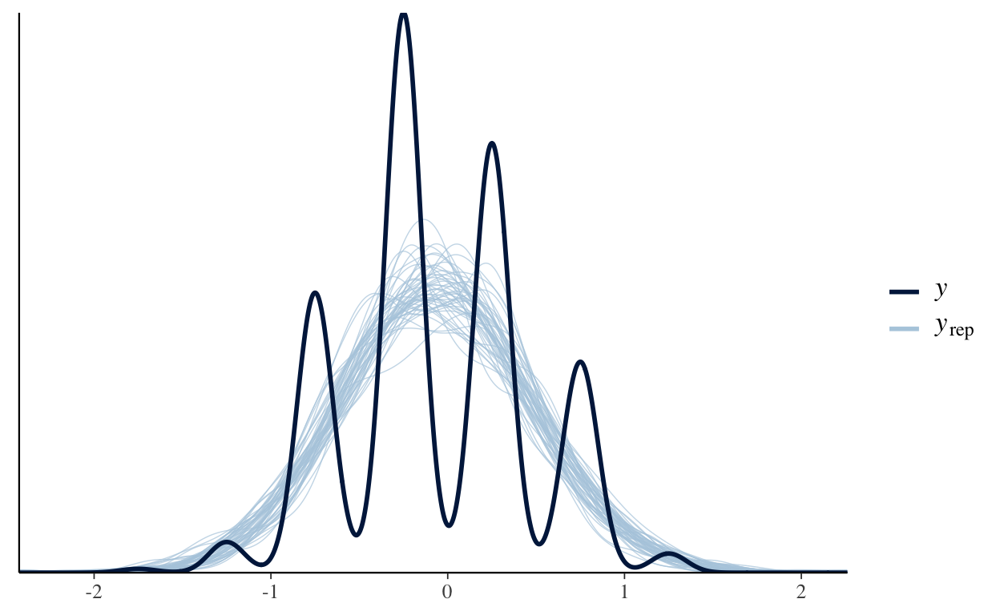
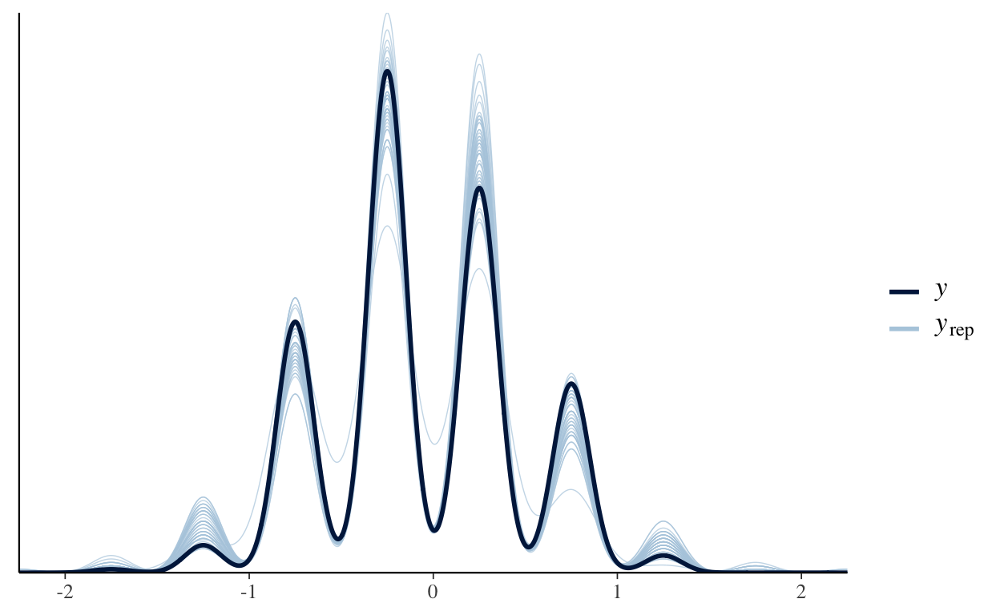

rr <- rnorm(400)
rr_cut <- cut(rr, breaks = seq(from = -7, to = 7, by = .5))
table(rr_cut) |> plot()
library(tidyverse)
rr_cut <- cut(rnorm(4000), breaks = seq(from = -4, to = 4, by = .5))
cut_rr_tbl <- as_tibble(table(rr_cut)) |>
mutate(low = seq(from = -4, to = 3.5, by = .5),
up = low + .5,
mid = (low+up)/2)
rr_mean <- with(cut_rr_tbl, sum(mid*n)/sum(n))
rr_mean
[1] -0.0035[1] 0.2465Can we do this same trick with the variance
yes for sure.
Now let’s try something in Stan
categorical_hist <- cmdstanr::cmdstan_model(stan_file = here::here(
"_posts", "2022-07-07-histogram-data", "categorical_hist.stan"))
rr <- rnorm(400)
breaks <- seq(from = -7, to = 7, by = .5)
rr_cut <- cut(rr, breaks)
as.numeric(rr_cut)
[1] 14 11 16 17 11 15 14 15 9 17 13 14 14 17 11 11 14 13 17 12 16
[22] 12 13 14 15 14 12 15 16 17 16 11 14 16 13 15 16 12 14 15 13 12
[43] 13 14 17 13 14 12 14 13 15 11 16 16 14 12 11 17 16 16 11 15 13
[64] 14 15 15 16 15 17 12 15 13 14 12 15 16 21 16 15 13 12 13 15 17
[85] 18 9 16 13 12 16 13 15 15 16 15 15 14 11 15 21 12 11 11 15 15
[106] 14 15 15 15 14 15 16 10 12 16 11 12 14 16 11 15 16 20 13 13 9
[127] 17 14 14 14 14 12 14 15 17 12 12 17 13 15 16 13 15 17 18 12 13
[148] 13 13 13 14 14 13 14 12 16 15 16 11 14 15 15 14 13 16 18 15 13
[169] 16 13 13 15 14 14 13 14 14 15 14 14 15 18 11 16 14 14 15 14 11
[190] 16 13 13 14 15 14 18 17 13 15 15 15 17 14 11 13 16 16 17 11 19
[211] 14 13 11 17 14 14 11 15 18 14 16 12 16 16 15 17 16 15 16 15 14
[232] 18 16 14 15 13 14 16 17 15 11 13 15 15 11 14 15 16 10 11 13 17
[253] 14 13 17 14 16 15 17 15 18 14 14 16 14 12 16 14 18 17 18 16 13
[274] 13 13 16 15 18 11 18 14 15 14 13 14 13 15 17 17 11 15 19 12 12
[295] 13 15 15 13 16 16 14 14 17 13 17 13 15 16 16 14 11 13 15 15 12
[316] 15 16 12 14 17 14 15 16 15 14 12 14 16 14 14 14 11 12 13 15 16
[337] 17 15 15 17 13 13 14 13 14 15 13 14 15 14 12 17 13 16 12 15 16
[358] 15 13 17 13 10 12 15 15 15 12 12 18 14 12 16 17 15 13 13 11 15
[379] 15 17 11 16 14 15 12 13 15 12 12 14 15 16 17 13 17 16 15 12 15
[400] 13breaks
[1] -7.0 -6.5 -6.0 -5.5 -5.0 -4.5 -4.0 -3.5 -3.0 -2.5 -2.0 -1.5 -1.0
[14] -0.5 0.0 0.5 1.0 1.5 2.0 2.5 3.0 3.5 4.0 4.5 5.0 5.5
[27] 6.0 6.5 7.0nlevels(rr_cut)
[1] 28datlist <- list(y = as.numeric(rr_cut),
K = nlevels(rr_cut),
N = length(rr),
breaks = breaks[-1])
cat_samp <- categorical_hist$sample(data = datlist)
Running MCMC with 4 sequential chains...This is bizarre because WHY does the sum of the probabilities parameter end up being so HIGH??
categorical_hist_norm <- cmdstanr::cmdstan_model(stan_file = here::here(
"_posts", "2022-07-07-histogram-data", "categorical_hist_norm.stan"))
rr <- rnorm(400)
breaks <- seq(from = -7, to = 7, by = .5)
rr_cut <- cut(rr, breaks)
datlist <- list(y = as.numeric(rr_cut),
K = nlevels(rr_cut),
N = length(rr),
breaks = breaks[-1])
cat_samp <- categorical_hist_norm$sample(data = datlist)
via multinomial
multinom_norm <- cmdstanr::cmdstan_model(stan_file = here::here(
"_posts", "2022-07-07-histogram-data", "multinom_norm.stan"))
rr <- rnorm(400)
breaks <- seq(from = -7, to = 7, by = .5)
rr_cut <- cut(rr, breaks)
datlist <- list(y = as.numeric(table(rr_cut)),
K = nlevels(rr_cut),
breaks = breaks[-1])
multin_samp <- multinom_norm$sample(data = datlist)
Running MCMC with 4 sequential chains...
Chain 1 Iteration: 1 / 2000 [ 0%] (Warmup)
Chain 1 Iteration: 100 / 2000 [ 5%] (Warmup)
Chain 1 Iteration: 200 / 2000 [ 10%] (Warmup)
Chain 1 Iteration: 300 / 2000 [ 15%] (Warmup)
Chain 1 Iteration: 400 / 2000 [ 20%] (Warmup)
Chain 1 Iteration: 500 / 2000 [ 25%] (Warmup)
Chain 1 Iteration: 600 / 2000 [ 30%] (Warmup)
Chain 1 Iteration: 700 / 2000 [ 35%] (Warmup)
Chain 1 Iteration: 800 / 2000 [ 40%] (Warmup)
Chain 1 Iteration: 900 / 2000 [ 45%] (Warmup)
Chain 1 Iteration: 1000 / 2000 [ 50%] (Warmup)
Chain 1 Iteration: 1001 / 2000 [ 50%] (Sampling)
Chain 1 Iteration: 1100 / 2000 [ 55%] (Sampling)
Chain 1 Iteration: 1200 / 2000 [ 60%] (Sampling)
Chain 1 Iteration: 1300 / 2000 [ 65%] (Sampling)
Chain 1 Iteration: 1400 / 2000 [ 70%] (Sampling)
Chain 1 Iteration: 1500 / 2000 [ 75%] (Sampling)
Chain 1 Iteration: 1600 / 2000 [ 80%] (Sampling)
Chain 1 Iteration: 1700 / 2000 [ 85%] (Sampling)
Chain 1 Iteration: 1800 / 2000 [ 90%] (Sampling)
Chain 1 Iteration: 1900 / 2000 [ 95%] (Sampling)
Chain 1 Iteration: 2000 / 2000 [100%] (Sampling)
Chain 1 finished in 0.4 seconds.
Chain 2 Iteration: 1 / 2000 [ 0%] (Warmup)
Chain 2 Iteration: 100 / 2000 [ 5%] (Warmup)
Chain 2 Iteration: 200 / 2000 [ 10%] (Warmup)
Chain 2 Iteration: 300 / 2000 [ 15%] (Warmup)
Chain 2 Iteration: 400 / 2000 [ 20%] (Warmup)
Chain 2 Iteration: 500 / 2000 [ 25%] (Warmup)
Chain 2 Iteration: 600 / 2000 [ 30%] (Warmup)
Chain 2 Iteration: 700 / 2000 [ 35%] (Warmup)
Chain 2 Iteration: 800 / 2000 [ 40%] (Warmup)
Chain 2 Iteration: 900 / 2000 [ 45%] (Warmup)
Chain 2 Iteration: 1000 / 2000 [ 50%] (Warmup)
Chain 2 Iteration: 1001 / 2000 [ 50%] (Sampling)
Chain 2 Iteration: 1100 / 2000 [ 55%] (Sampling)
Chain 2 Iteration: 1200 / 2000 [ 60%] (Sampling)
Chain 2 Iteration: 1300 / 2000 [ 65%] (Sampling)
Chain 2 Iteration: 1400 / 2000 [ 70%] (Sampling)
Chain 2 Iteration: 1500 / 2000 [ 75%] (Sampling)
Chain 2 Iteration: 1600 / 2000 [ 80%] (Sampling)
Chain 2 Iteration: 1700 / 2000 [ 85%] (Sampling)
Chain 2 Iteration: 1800 / 2000 [ 90%] (Sampling)
Chain 2 Iteration: 1900 / 2000 [ 95%] (Sampling)
Chain 2 Iteration: 2000 / 2000 [100%] (Sampling)
Chain 2 finished in 0.4 seconds.
Chain 3 Iteration: 1 / 2000 [ 0%] (Warmup)
Chain 3 Iteration: 100 / 2000 [ 5%] (Warmup)
Chain 3 Iteration: 200 / 2000 [ 10%] (Warmup)
Chain 3 Iteration: 300 / 2000 [ 15%] (Warmup)
Chain 3 Iteration: 400 / 2000 [ 20%] (Warmup)
Chain 3 Iteration: 500 / 2000 [ 25%] (Warmup)
Chain 3 Iteration: 600 / 2000 [ 30%] (Warmup)
Chain 3 Iteration: 700 / 2000 [ 35%] (Warmup)
Chain 3 Iteration: 800 / 2000 [ 40%] (Warmup)
Chain 3 Iteration: 900 / 2000 [ 45%] (Warmup)
Chain 3 Iteration: 1000 / 2000 [ 50%] (Warmup)
Chain 3 Iteration: 1001 / 2000 [ 50%] (Sampling)
Chain 3 Iteration: 1100 / 2000 [ 55%] (Sampling)
Chain 3 Iteration: 1200 / 2000 [ 60%] (Sampling)
Chain 3 Iteration: 1300 / 2000 [ 65%] (Sampling)
Chain 3 Iteration: 1400 / 2000 [ 70%] (Sampling)
Chain 3 Iteration: 1500 / 2000 [ 75%] (Sampling)
Chain 3 Iteration: 1600 / 2000 [ 80%] (Sampling)
Chain 3 Iteration: 1700 / 2000 [ 85%] (Sampling)
Chain 3 Iteration: 1800 / 2000 [ 90%] (Sampling)
Chain 3 Iteration: 1900 / 2000 [ 95%] (Sampling)
Chain 3 Iteration: 2000 / 2000 [100%] (Sampling)
Chain 3 finished in 0.3 seconds.
Chain 4 Iteration: 1 / 2000 [ 0%] (Warmup)
Chain 4 Iteration: 100 / 2000 [ 5%] (Warmup)
Chain 4 Iteration: 200 / 2000 [ 10%] (Warmup)
Chain 4 Iteration: 300 / 2000 [ 15%] (Warmup)
Chain 4 Iteration: 400 / 2000 [ 20%] (Warmup)
Chain 4 Iteration: 500 / 2000 [ 25%] (Warmup)
Chain 4 Iteration: 600 / 2000 [ 30%] (Warmup)
Chain 4 Iteration: 700 / 2000 [ 35%] (Warmup)
Chain 4 Iteration: 800 / 2000 [ 40%] (Warmup)
Chain 4 Iteration: 900 / 2000 [ 45%] (Warmup)
Chain 4 Iteration: 1000 / 2000 [ 50%] (Warmup)
Chain 4 Iteration: 1001 / 2000 [ 50%] (Sampling)
Chain 4 Iteration: 1100 / 2000 [ 55%] (Sampling)
Chain 4 Iteration: 1200 / 2000 [ 60%] (Sampling)
Chain 4 Iteration: 1300 / 2000 [ 65%] (Sampling)
Chain 4 Iteration: 1400 / 2000 [ 70%] (Sampling)
Chain 4 Iteration: 1500 / 2000 [ 75%] (Sampling)
Chain 4 Iteration: 1600 / 2000 [ 80%] (Sampling)
Chain 4 Iteration: 1700 / 2000 [ 85%] (Sampling)
Chain 4 Iteration: 1800 / 2000 [ 90%] (Sampling)
Chain 4 Iteration: 1900 / 2000 [ 95%] (Sampling)
Chain 4 Iteration: 2000 / 2000 [100%] (Sampling)
Chain 4 finished in 0.3 seconds.
All 4 chains finished successfully.
Mean chain execution time: 0.3 seconds.
Total execution time: 1.7 seconds.sampling midpoints
midpoint_norm <- cmdstanr::cmdstan_model(stan_file = here::here(
"_posts", "2022-07-07-histogram-data", "midpoint.stan"))
rr <- rnorm(400, 0, .5)
breaks <- seq(from = -7, to = 7, by = .5)
rr_cut <- cut(rr, breaks)
plot(table(rr_cut))

levels(rr_cut)
[1] "(-7,-6.5]" "(-6.5,-6]" "(-6,-5.5]" "(-5.5,-5]" "(-5,-4.5]"
[6] "(-4.5,-4]" "(-4,-3.5]" "(-3.5,-3]" "(-3,-2.5]" "(-2.5,-2]"
[11] "(-2,-1.5]" "(-1.5,-1]" "(-1,-0.5]" "(-0.5,0]" "(0,0.5]"
[16] "(0.5,1]" "(1,1.5]" "(1.5,2]" "(2,2.5]" "(2.5,3]"
[21] "(3,3.5]" "(3.5,4]" "(4,4.5]" "(4.5,5]" "(5,5.5]"
[26] "(5.5,6]" "(6,6.5]" "(6.5,7]" midpts <- seq(from = -6.75, to = 6.75, by = .5)[as.numeric(rr_cut)]
datlist <- list(y = midpts,
N = length(rr))
mid_samp <- midpoint_norm$sample(data = datlist, refresh = 0)
Running MCMC with 4 sequential chains...
Chain 1 finished in 0.0 seconds.
Chain 2 finished in 0.1 seconds.
Chain 3 finished in 0.0 seconds.
Chain 4 finished in 0.0 seconds.
All 4 chains finished successfully.
Mean chain execution time: 0.0 seconds.
Total execution time: 0.6 seconds.mid_samp
variable mean median sd mad q5 q95 rhat ess_bulk ess_tail
lp__ 56.75 57.06 0.99 0.71 54.77 57.67 1.00 2106 2388
mu -0.07 -0.07 0.03 0.03 -0.11 -0.03 1.00 3469 2740
sigma 0.53 0.52 0.02 0.02 0.50 0.56 1.00 3013 2666lcdf
binning and histogram comparison
let’s make some bayesplot predictions for our
dataset
library(tidybayes)
# have response rr
# rr
# need to make some fake ones
rr_df <- spread_draws(mid_samp, mu, sigma, ndraws = 50) |>
rowwise() |>
mutate(fake_rr = list(rnorm(400, mean = mu, sd = sigma)))
rr_rep <- do.call(rbind, rr_df$fake_rr)
library(bayesplot)
ppc_dens_overlay(rr, rr_rep)
# ppc_ecdf_overlay(rr, rr_rep)
OKAY so not exactly inspiring! it looks as if our model has failed to get the variance right
In real life we don’t have the rr variable, we ahve
rr_cut
ppc_dens_overlay(midpts, rr_rep)

let’s try binning the response
# same as above
make_midpoints <- function(vec,
breaks = seq(from = -7, to = 7, by = .5),
midpts = seq(from = -6.75, to = 6.75, by = .5)) {
vec_cut <- cut(vec, breaks)
midpts[as.numeric(vec_cut)]
}
rr_df_cut <- rr_df |>
mutate(fake_cut = list(make_midpoints(fake_rr)))
rr_rep <- do.call(rbind, rr_df_cut$fake_cut)
ppc_dens_overlay(midpts, rr_rep)

binning a Gamma
create a vector rg, which imitates posterior predictions
from a gamma model.
rg <- rgamma(200, 20, 20/14)
rg
[1] 11.148810 14.387708 9.674238 16.320391 10.985600 16.090211
[7] 9.844958 12.681727 16.916489 15.497908 11.429322 14.987521
[13] 13.129644 16.368250 14.049850 13.855158 14.490142 14.068424
[19] 10.360314 15.766586 12.837461 13.882887 14.158766 11.218009
[25] 14.461096 17.497223 12.568905 12.037941 13.418572 18.931769
[31] 12.187666 16.182908 13.733514 12.467907 13.918203 10.461181
[37] 16.061186 11.080066 14.767174 14.817881 10.695555 14.475702
[43] 12.798636 13.688472 9.978134 10.769746 12.172767 12.318955
[49] 17.488327 14.144807 12.309059 11.632788 15.724272 14.635524
[55] 12.778258 14.358757 12.528137 13.290445 14.776833 12.201565
[61] 12.805420 17.237798 12.977225 14.721596 11.559610 12.415062
[67] 11.879814 13.291033 13.051943 14.478101 12.050201 17.085692
[73] 14.789540 12.881336 23.875107 14.468617 14.299199 14.845624
[79] 11.916287 17.818554 16.530512 14.219394 18.419465 8.146202
[85] 10.673557 12.787082 10.876239 17.137757 17.362005 15.106563
[91] 11.140694 9.649191 9.509588 9.692800 15.189504 10.950806
[97] 13.463674 13.707915 15.124237 10.259639 15.974895 18.695081
[103] 16.774661 13.892157 11.132691 14.011527 14.351958 12.789202
[109] 15.360404 13.277811 9.077692 16.762473 16.945595 11.155106
[115] 12.034736 11.688088 15.570362 11.062725 11.493504 16.649076
[121] 10.527650 12.727167 14.616723 17.841274 13.870529 14.153206
[127] 20.112672 14.637118 16.599819 14.828167 12.051345 13.764439
[133] 17.336369 11.117833 11.432366 10.058832 11.991344 13.469665
[139] 12.740424 13.155095 9.466576 16.002379 16.228421 15.816786
[145] 20.341883 17.782296 14.164214 16.668841 15.057313 12.258890
[151] 14.337697 10.959833 8.436382 12.901918 6.918244 12.462276
[157] 13.315163 10.857098 10.604356 9.428877 12.309459 9.692284
[163] 13.101679 14.563190 18.377334 12.584356 8.941269 19.201679
[169] 12.423915 16.032962 12.552300 9.649493 10.844850 14.613292
[175] 16.208037 21.645321 10.889439 14.872369 7.557834 14.366689
[181] 17.113496 11.945323 13.111013 11.485111 15.330432 8.584282
[187] 11.498198 13.584622 14.827059 15.074608 9.017077 12.021029
[193] 17.700476 12.543842 16.218981 18.931989 9.573988 18.691450
[199] 16.557631 11.311648# checking growth every even-numbered day
evenbreaks <- seq(0,30, by = 2)
evenbreaks
[1] 0 2 4 6 8 10 12 14 16 18 20 22 24 26 28 30rg_evencut <- cut(rg, breaks = evenbreaks)
# note that for 16 cuts we have 15 levels
nlevels(rg_evencut)
[1] 15length(evenbreaks)
[1] 16# midpoints via logic
seq(1, 29, by =2)
[1] 1 3 5 7 9 11 13 15 17 19 21 23 25 27 29# midpoints from math
mids <- (evenbreaks[-1] + evenbreaks[-length(evenbreaks)])/2
mids
[1] 1 3 5 7 9 11 13 15 17 19 21 23 25 27 29mids[as.numeric(rg_evencut)]
[1] 11 15 9 17 11 17 9 13 17 15 11 15 13 17 15 13 15 15 11 15 13
[22] 13 15 11 15 17 13 13 13 19 13 17 13 13 13 11 17 11 15 15 11 15
[43] 13 13 9 11 13 13 17 15 13 11 15 15 13 15 13 13 15 13 13 17 13
[64] 15 11 13 11 13 13 15 13 17 15 13 23 15 15 15 11 17 17 15 19 9
[85] 11 13 11 17 17 15 11 9 9 9 15 11 13 13 15 11 15 19 17 13 11
[106] 15 15 13 15 13 9 17 17 11 13 11 15 11 11 17 11 13 15 17 13 15
[127] 21 15 17 15 13 13 17 11 11 11 11 13 13 13 9 17 17 15 21 17 15
[148] 17 15 13 15 11 9 13 7 13 13 11 11 9 13 9 13 15 19 13 9 19
[169] 13 17 13 9 11 15 17 21 11 15 7 15 17 11 13 11 15 9 11 13 15
[190] 15 9 13 17 13 17 19 9 19 17 11